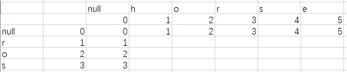
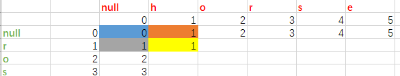
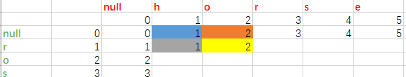
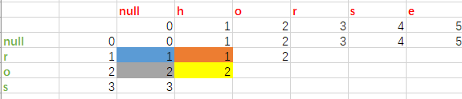
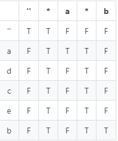

动态规划集合
Comment摘录了一些经典的动态规划题
基本DP问题：
70. Climbing Stairs √
假设你正在爬楼梯。需要 n 阶你才能到达楼顶。
每次你可以爬 1 或 2 个台阶。你有多少种不同的方法可以爬到楼顶呢？
注意：给定 n 是一个正整数。
示例 1：
输入：2
输出：2
解释： 有两种方法可以爬到楼顶。
- 1 阶 + 1 阶
- 2 阶
示例 2：
输入：3
输出：3
解释： 有三种方法可以爬到楼顶。
- 1 阶 + 1 阶 + 1 阶
- 1 阶 + 2 阶
- 2 阶 + 1 阶
1 | public int climbStairs(int n) { |
120. Triangle √
给定一个三角形，找出自顶向下的最小路径和。每一步只能移动到下一行中相邻的结点上。
例如，给定三角形：
[
[2],
[3,4],
[6,5,7],
[4,1,8,3]
]
自顶向下的最小路径和为 11（即，2 + 3 + 5 + 1 = 11）。
说明：
如果你可以只使用 O(n) 的额外空间（n 为三角形的总行数）来解决这个问题，那么你的算法会很加分。
二维dp解法：
1 | int[][]dp; |
如何降维打击呢？如果看过背包问题就不难回答了。dp[i][j]<—dp[i+1][j] , dp[i+1][j+1]。
因此正序遍历的话只会改变dp[i]的值，对dp[i+1]的值没有任何影响，所以我们降维打击应该采取正向遍历。
1 | public int minimumTotal(List<List<Integer>> triangle) { |
53. Maximum Subarray √
给定一个整数数组 nums ，找到一个具有最大和的连续子数组（子数组最少包含一个元素），返回其最大和。
示例:
输入: [-2,1,-3,4,-1,2,1,-5,4],
输出: 6
解释: 连续子数组 [4,-1,2,1] 的和最大，为 6。
**进阶:
如果你已经实现复杂度为 O(n) 的解法，尝试使用更为精妙的分治法求解。
1 | public int maxSubArray(int[] nums) { |
其实可以多开1个空间去优化代码长度：
1 | public int maxSubArray(int[] nums) { |
我们可以看到dp[i]其实依赖只于dp[i-1]，因此我们只需要两个变量足以。
1 | public int maxSubArray(int[] nums) { |
303. Range Sum Query - Immutable √
Given an integer array nums, find the sum of the elements between indices i and j (i ≤ j), inclusive.
Example:
1 | Given nums = [-2, 0, 3, -5, 2, -1] |
1 | int[] res; |
343. Integer Break √
Given a positive integer n, break it into the sum of at least two positive integers and maximize the product of those integers. Return the maximum product you can get.
Example 1:
1 | Input: 2 |
Example 2:
1 | Input: 10 |
1 | public int integerBreak(int n) { |
矩形DP问题
62. Unique Paths √
一个机器人位于一个 m x n 网格的左上角 （起始点在下图中标记为“Start” ）。
机器人每次只能向下或者向右移动一步。机器人试图达到网格的右下角（在下图中标记为“Finish”）。
问总共有多少条不同的路径？

Above is a 7 x 3 grid. How many possible unique paths are there?
例如，上图是一个7 x 3 的网格。有多少可能的路径？
说明： m 和 n 的值均不超过 100。
示例 1:
1 | 输入: m = 3, n = 2 |
示例 2:
1 | 输入: m = 7, n = 3 |
1 | public imt umiquePaths(imt m, imt n) { |
降维打击：
还是分析一下dp[i][j]依赖于dp[i][j]当前行的左边元素和dp[i-1][j]上一行的元素，因此应该选择正序遍历以实时获得当前行左边元素。
1 | public int uniquePaths(int m, int n) { |
64. Minimum Path Sum √
Given a m x n grid filled with non-negative numbers, find a path from top left to bottom right which minimizes the sum of all numbers along its path.
Note: You can only move either down or right at any point in time.
Example:
1 | Input: |
1 | public int minPathSum(int[][] grid) { |
63. Unique Paths II √
一个机器人位于一个 m x n 网格的左上角 （起始点在下图中标记为“Start” ）。
机器人每次只能向下或者向右移动一步。机器人试图达到网格的右下角（在下图中标记为“Finish”）。
现在考虑网格中有障碍物。那么从左上角到右下角将会有多少条不同的路径？

网格中的障碍物和空位置分别用 1 和 0 来表示。
说明：m 和 n 的值均不超过 100。
示例 1:
1 | 输入: |
1 | public int uniquePathsWithObstacles(int[][] obstacleGrid) { |
221. Maximal Square -
在一个由 0 和 1 组成的二维矩阵内，找到只包含 1 的最大正方形，并返回其面积。
示例:
1 | 输入: |
咋一看是dfs其实不然，试了很多方法都没办法真正解出来。
其实正方形大小计算就是看它左右还有斜下角是不是1。
1 | public int maximalSquare(char[][] matrix) { |
序列类动态规划问题
300. Longest Increasing Subsequence √
给定一个无序的整数数组，找到其中最长上升子序列的长度。
示例:
输入: [10,9,2,5,3,7,101,18]
输出: 4
解释: 最长的上升子序列是 [2,3,7,101]，它的长度是 4。
说明:
· 可能会有多种最长上升子序列的组合，你只需要输出对应的长度即可。
· 你算法的时间复杂度应该为 O(n2) 。
1 | public int lengthOfLIS(int[] nums) { |
LeetCode 第 256 号问题：粉刷房子 √
注意：本题为 LeetCode 的付费题目，需要开通会员才能解锁查看与提交代码。
题目描述
假如有一排房子，共 n 个，每个房子可以被粉刷成红色、蓝色或者绿色这三种颜色中的一种，你需要粉刷所有的房子并且使其相邻的两个房子颜色不能相同。
当然，因为市场上不同颜色油漆的价格不同，所以房子粉刷成不同颜色的花费成本也是不同的。每个房子粉刷成不同颜色的花费是以一个 n x 3 的矩阵来表示的。
例如，costs[0][0]表示第 0 号房子粉刷成红色的成本花费；costs[1][2]表示第 1 号房子粉刷成绿色的花费，以此类推。请你计算出粉刷完所有房子最少的花费成本。
注意：
所有花费均为正整数。
示例：
1 | 输入: [[17,2,17],[16,16,5],[14,3,19]] |
1 | public static int paint(int[][] cost){ |
198. House Robber √
You are a professional robber planning to rob houses along a street. Each house has a certain amount of money stashed, the only constraint stopping you from robbing each of them is that adjacent houses have security system connected and it will automatically contact the police if two adjacent houses were broken into on the same night.
Given a list of non-negative integers representing the amount of money of each house, determine the maximum amount of money you can rob tonight without alerting the police.
Example 1:
1 | Input: [1,2,3,1] |
1 | public int rob(int[] nums) { |
LeetCode 第 265 号问题：粉刷房子II √
注意：本题为 LeetCode 的付费题目，需要开通会员才能解锁查看与提交代码。
题目描述
假如有一排房子，共 n 个，每个房子可以被粉刷成 k 种颜色中的一种，你需要粉刷所有的房子并且使其相邻的两个房子颜色不能相同。
当然，因为市场上不同颜色油漆的价格不同，所以房子粉刷成不同颜色的花费成本也是不同的。每个房子粉刷成不同颜色的花费是以一个 n x k 的矩阵来表示的。
例如，costs[0][0] 表示第 0 号房子粉刷成 0 号颜色的成本花费；costs[1][2] 表示第 1 号房子粉刷成 2 号颜色的成本花费，以此类推。请你计算出粉刷完所有房子最少的花费成本。
注意：
所有花费均为正整数。
示例：
1 | 输入: [[1,5,3],[2,9,4]] |
进阶：
您能否在 O(nk) 的时间复杂度下解决此问题？
1 | public static int minCostII(int[][] costs) { |
其实这是可以优化的，我们只需要在第 i - 1 个位置的状态中找到最小值和次小值，在选择第 i 个房子的颜色的时候，我们看当前颜色是不是和最小值的颜色相重，不是的话直接加上最小值，如果相重的话，我们就加上次小值，这样一来，我们把两个嵌套的循环，拆开成两个平行的循环，时间复杂度降至 O(n*k)。
1 | public static int minCostII2(int[][] costs) { |
213. House Robber II √
You are a professional robber planning to rob houses along a street. Each house has a certain amount of money stashed. All houses at this place are arranged in a circle. That means the first house is the neighbor of the last one. Meanwhile, adjacent houses have security system connected and it will automatically contact the police if two adjacent houses were broken into on the same night.
Given a list of non-negative integers representing the amount of money of each house, determine the maximum amount of money you can rob tonight without alerting the police.
Example 1:
1 | Input: [2,3,2] |
1 | public int rob(int[] nums) { |
双序列类动态规划：字符匹配类
它的题目特征其实特别明显，比如：
· 输入是两个字符串，问是否通过一定的规则相匹配
· 输入是两个字符串，问两个字符串是否存在包含被包含的关系
· 输入是两个字符串，问一个字符串怎样通过一定规则转换成另一个字符串
· 输入是两个字符串，问它们的共有部分
可以画表格来解题
1143. Longest Common Subsequence -
给定两个字符串 text1 和 text2，返回这两个字符串的最长公共子序列。
一个字符串的 子序列 是指这样一个新的字符串：它是由原字符串在不改变字符的相对顺序的情况下删除某些字符（也可以不删除任何字符）后组成的新字符串。
例如，”ace” 是 “abcde” 的子序列，但 “aec” 不是 “abcde” 的子序列。两个字符串的「公共子序列」是这两个字符串所共同拥有的子序列。
若这两个字符串没有公共子序列，则返回 0。
示例 1:
1 | 输入：text1 = "abcde", text2 = "ace" |
示例 2:
1 | 输入：text1 = "abc", text2 = "abc" |
示例 3:
1 | 输入：text1 = "abc", text2 = "def" |
画图可得
1 | "" a c e |
在拆解问题中也说了，有两种情况，就是:
1 | 如果 str1(i) != str2(j): |
讲道理，第二次做的时候不明白为什么和dp[i - 1][j - 1]有关。
其实是这样，比如说我们比abc和acc，要么最长的长度是ab和ac基础上+1，要么是abc和ac，要么是acc和ab。因为acc和abc以及ac和abc的匹配长度是一样的。所以abc和acc不能是ac基础上+1。
1 | public int longestCommonSubsequence(String text1, String text2) { |
优化后：
1 | public int longestCommonSubsequence(String s1, String s2) { |
^是亦或
72. Edit Distance
给定两个单词 word1 和 word2*，计算出将 *word1 转换成 word2 所使用的最少操作数 。
你可以对一个单词进行如下三种操作：
· 插入一个字符
· 删除一个字符
· 替换一个字符
示例 1:
输入: word1 = “horse”, word2 = “ros”
输出: 3
解释:
horse -> rorse (将 ‘h’ 替换为 ‘r’)
rorse -> rose (删除 ‘r’)
rose -> ros (删除 ‘e’)
示例 2:
输入: word1 = “intention”, word2 = “execution”
输出: 5
解释:
intention -> inention (删除 ‘t’)
inention -> enention (将 ‘i’ 替换为 ‘e’)
enention -> exention (将 ‘n’ 替换为 ‘x’)
exention -> exection (将 ‘n’ 替换为 ‘c’)
exection -> execution (插入 ‘u’)
求什么就设什么
Dp[i][j]设为word1 的前i个字符和word2的前j个字符转换为相同字符串的最小费用
初始化条件矩阵（x轴设为i，y轴为j）
因为null->null h o r s e分别是0 1 2 3 4 5
且null->null r o s 分别是 0 1 2 3

H和R

此时黄色格子的值相当于是把h替换r是最小的
Min(dp[i-1][j],dp[i][j-1],dp[i-1][j-1])+1
因此dp[i-1][j-1]+1代表替换操作
HO和R->依赖以上一步的变化结果->RO和R

此时可以是将o删除 dp[i-1][j]+1(i-1就是删除i)或者是将o替换成null

此时可以将o插入dp[i][j-1]+1(插入也相当于删除第j个元素)
因此我们可以得到
If(word1[i]==word1[j])
Dp[i][j]=dp[i-1][j-1]
Else
Dp[i][j]=Min(dp[i-1][j],dp[i][j-1],dp[i-1][j-1])+1;
| 0 | 1 | 2 | 3 | 4 | 5 |
|---|---|---|---|---|---|
| 1 | 1 | 2 | 2 | 3 | 4 |
| 2 | 2 | 1 | 2 | 3 | 4 |
| 3 | 3 | 2 | 2 | 2 | 3 |
每次pre一开始肯定是dp[0],然后是dp[1]…dp[m],循环了一遍后
又是从dp[0]开始。因为循环没有改变dp[0]的值，因此需要改变。（在二维里面可以初始化dp[i][0]），在一维的里面必须手动初始化。
44. Wildcard Matching
给定一个字符串 (s) 和一个字符模式 (p) ，实现一个支持 ‘?’ 和 ‘*’ 的通配符匹配。
‘?’ 可以匹配任何单个字符。
‘*’ 可以匹配任意字符串（包括空字符串）。
两个字符串完全匹配才算匹配成功。
说明:
· s 可能为空，且只包含从 a-z 的小写字母。
· p 可能为空，且只包含从 a-z 的小写字母，以及字符 ? 和 *。
示例 1:
输入:
s = “aa”
p = “a”
输出: false
解释: “a” 无法匹配 “aa” 整个字符串。
示例 2:
输入:
s = “aa”
p = “*”
输出: true
解释: ‘*’ 可以匹配任意字符串。
示例 3:
输入:
s = “cb”
p = “?a”
输出: false
解释: ‘?’ 可以匹配 ‘c’, 但第二个 ‘a’ 无法匹配 ‘b’。
示例 4:
输入:
s = “adceb”
p = “ab”
输出: true
解释: 第一个 ‘‘ 可以匹配空字符串, 第二个 ‘‘ 可以匹配字符串 “dce”.
示例 5:
输入:
s = “acdcb”
p = “a*c?b”
输入: false

题目给定两个字符串，一个字符串是匹配串，除了小写字母外，匹配串里面还包含 * 和 ? 这两个特殊字符，另一个是普通字符串，里面只包含小写字母。
题目问这个普通字符串是否和匹配字符串相匹配，匹配规则是 ? 可以匹配单个字符，* 可以匹配一个区间，也就是多个字符，当然也可以匹配 0 个字符，也就是空串。
依然是四个步骤走一遍：
· 问题拆解
做多了，你发现这种问题其实都是一个套路，老样子，我们还是根据我们要求解的问题去看和其直接相关的子问题，我们需要求解的问题是 pattern(0…m) 和 str(0…n) 是否匹配，这里的核心依然是字符之间的比较，但是和之前不同的是，这个比较不仅仅是看两个字符相不相等，它还有了一定的匹配规则在里面，那我们就依次枚举讨论下：
pattern(m) == str(n):
问题拆解成看子问题 pattern(0…m-1) 和 str(0…n-1) 是否匹配
pattern(m) == ?:
问题拆解成看子问题 pattern(0…m-1) 和 str(0…n-1) 是否匹配
pattern(m) == *:可以匹配空串、以及任意多个字符
当 * 匹配空串时：问题拆解成看子问题 pattern(0…m-1) 和 str(0…n) 是否匹配
当 * 匹配任意字符时：问题拆解成看子问题 pattern(0…m) 和 str(0…n-1) 是否匹配
这里解释一下，匹配任意多个字符意味着之前的子问题也可以使用当前的，也就是用 pattern(m) 来进行匹配，因此，当前问题可以拆解成子问题 pattern(0…m) 和 str(0…n-1) 是否匹配，你发现弄来弄去，子问题依然是那三个：
· pattern(0…m-1) 和 str(0…n-1) 是否匹配
· pattern(0…m-1) 和 str(0…n) 是否匹配
· pattern(0…m) 和 str(0…n-1) 是否匹配
不知道你是否发现了字符匹配类动态规划问题的共性，如果是画表格，你只需要关注当前格子的 左边、上边、左上 这三个位置的相邻元素，因为表格有实际数据做辅助，所以画表格有时可以帮助你找到问题与子问题之间的联系。
· 状态定义
还是老样子，dp[i][j] 表示的就是问题 pattern(0…i) 和 str(0…j) 的答案，直接说就是 pattern(0…i) 和 str(0…j) 是否匹配
· 递推方程
把之前 “问题拆解” 中的文字描述转换成状态的表达式就是递推方程：
pattern(i) == str(j) || pattern(i) == ‘?’:
dp[i][j] = dp[i - 1][j - 1]
pattern(i) == ‘*’:
dp[i][j] = dp[i - 1][j] || dp[i][j - 1]
· 实现
这类问题的状态数组往往需要多开一格，主要是为了考虑空串的情况，这里我就不赘述了。
我想说的是，关于初始化的部分，如果 str 是空的，pattern 最前面有 *，因为 * 是可以匹配空串的，因此这个也需要记录一下，反过来，如果 pattern 是空的，str 只要不是空的就无法匹配，这里就不需要特别记录。